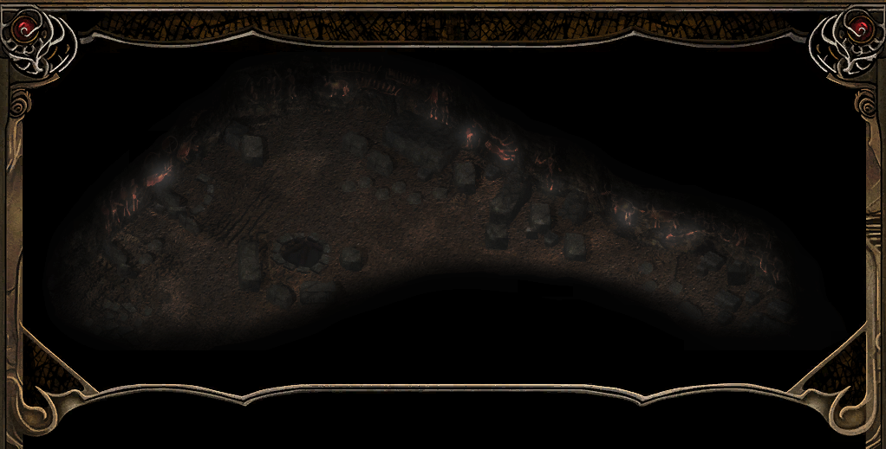

Nie będzie tak łatwo!

Góry Bełkotków 49

Hugnot 1 na widok przybyszów zaczął krzyczeć o orkach, lecz szybko dostrzegł pomyłkę i poprosił o ochronę. Imoen ponagliła go, by zamiast stać z otwartymi ustami, opowiedział, co widział. Przez okolicę przemknęło trzydziestu lub więcej orków, wyraźnie w pośpiechu. Na pytanie Sandrah o ludzkiego jeńca Hugnot wspomniał o wielkim worku, rozmiarami pasującym do porwanego człowieka. Nie wiedział jednak, co znajdowało się w środku — uciekł, nie mając ani okazji, ani ochoty zaglądać.
Orkowie ruszyli na północny wschód, ku wiosce niziołków Gullykin. Przy takim tempie mogli dotrzeć tam jeszcze przed świtem. Sandrah zauważyła, że droga ta nie prowadziła do Lasu Otulisko, lecz Hugnot był pewien kierunku. Na rozwidleniu napastnicy zatrzymali się, krzyczeli i kłócili tak zaciekle, że niemal liczył, iż pozabijają się nawzajem. Ostatecznie wybrali jednak inną drogę. Leech uznał, że bez kogoś, kto pokierowałby nimi z odrobiną rozsądku, mogli zwyczajnie pomylić szlak. Pozostawało pytanie, czego szukali w osadzie niziołków (The Kidnapping of Henning).
Dorn uznał, że napotkani nieumarli rzadko powstawali bez cudzej pomocy, a wszystko wokół zdradzało rękę Kryll. Ostrzegł Leecha, że czaiła się gdzieś w pobliżu. Od miesięcy myślał niemal wyłącznie o zemście na dawnych zdrajcach, a nowe moce tylko podsycały tę żądzę. Zapytany o ich źródło przyznał, że zawarł układ i przyjął pewne warunki. Na tym jednak zakończył wyjaśnienia.
Kryll zastali w otoczeniu uwiedzionych mężczyzn 2. Dorn wypomniał jej, że niegdyś uważał ją za jedyną osobę, która potrafiła spojrzeć poza jego półorczą krew. Teraz widział, jak bardzo się pomylił. Wspomniał też o Senjaku, którym już się zajął. Była wspólniczka odparła, że ktoś musiał wziąć na siebie winę, aby odwrócić podejrzenia od reszty, a wybór padł na niego za sprawą Simmeona. Próbowała zbyć zemstę jako małostkowość, lecz Dorn nie zamierzał wybaczyć pozostawienia go na śmierć w Luskan. Kryll zamieniła otaczających ją mężczyzn w szkielety i posłała je przeciw drużynie. Nie ocaliły swojej pani.
Po śmierci Kryll przy jej ciele znaleźli list od Simmeona. Nadawca przepraszał za gwałtowne zachowanie podczas ostatniego rozstania i ostrzegał, że pół-ork uciekł z więzienia, po czym zaczął zabijać dawnych kompanów. Zapewniał, że zdobył potężnego sprzymierzeńca, i zapraszał adresatów do ukrytego obozu tuż przed wejściem do Wrót Baldura. Liczył, że wspólnie łatwiej stawią czoło mścicielowi, który właśnie przeczesywał wybrzeże.
Dorn zażądał listu, a poznawszy kryjówkę Simmeona, natychmiast chciał ruszać w drogę. Leech przypomniał, że ostrzeżony przeciwnik mógł przygotować pułapkę, lecz on nie zamierzał zwalniać. Wierzył, że wymknie się każdej zasadzce i pokona każdą przeszkodę. Ufał własnej sile bardziej niż słowom zabitych zdrajców, choć przeczuwał, że wzmianka o potężnym sprzymierzeńcu była prawdziwa. Leech zauważył, że ostrożność najwyraźniej przestała mu towarzyszyć, i zaproponował dalszą podróż. Simmeon nie miał im uciec. (Dorn Il-Khan A Blackguard's Revennge). Powinni także odwiedzić Taris i poinformować ją co się stało z jej głupim mężem.

W kotlinie odnajdujemy Deneb 3, którą otaczały węże strzegące ją niczym wierne dzieci. Na widok drużyny zapowiedziała im kolejną ucztę, uznając przybyszów za złodziei. Leech zapytał, czy poprzedni intruzi również szukali Kerykeionu, lecz zamiast odpowiedzi usłyszał oskarżenia i wzmiankę o łotrach tańczących w świetle księżyca. Deneb chełpiła się, że kolejna marionetka padła ofiarą jej mocy. Gdy gnom zapytał o węże Deneb oznajmiła, że ona i jej podopieczni stanowili jedno, a wraz z nadejściem ciemności znów powstawali. Leech uznał, że nie sposób przemówić jej do rozsądku. Czarodziejka zagroziła, że ani ucieczka, ani walka nie zmienią losu przybyszów — jej pomocnicy mieli pożywić się ich zwłokami. Koniec końców Baldwin będzie rad z odzyskanego artefaktu (Sorceress of Shadows)
Lena 4 zatrzymała Leecha i błagała o pomoc dla nieprzytomnego przyjaciela. Od ponad tygodnia błąkała się po dziczy, szukając kogoś, kto zdołałby uratować ciężko rannego Samuela. Jego stan był tak poważny, że nawet Finch nie potrafiła mu pomóc. Jedyną nadzieją pozostawała Gellana Mirrorshade ze Świątyni Mądrości w Pomocnej Dłoni. Lena poprosiła, by drużyna ostrożnie podniosła rannego i bez zwłoki zaniosła go do kapłanki. Leech zgodził się pomóc, a wdzięczna kobieta raz jeszcze przestrzegła, że Samuelowi pozostało niewiele czasu.
Podczas drogi wędrowców zaatakowali dezerterzy 5, oskarżający Samuela o zdradę. Zgiełk walki na chwilę przywrócił rannemu świadomość. Sandrah natychmiast rzuciła proste zaklęcie, by choć trochę złagodzić jego ból. Kiedy odzyskał głos, zapytał o Lenę i miejsce, do którego trafił. Kapłanka zapewniła go, że kobieta była bezpieczna, a drużyna zamierzała jak najszybciej dostarczyć go do Świątyni Mądrości. Samuel ostrzegł jednak, że nic nie będzie dobrze, dopóki okolicą rządziła Płonąca Pięść. Sandrah nakazała mu zachować spokój, by rany ponownie się nie otworzyły. Finch zaproponowała kolejne zaklęcie, żartując, że podczas długiej drogi chory mógłby zacząć zaczepiać każdego napotkanego bandytę. Kapłanka wyjaśniła, że w warunkach polowych zrobiła już wszystko, co było możliwe. Samuel potrzebował świątyni, odpoczynku i odpowiedniej opieki. Zanim ponownie opadł z sił, zdążył wyjawić, że Płonąca Pięść przestała strzec prawa i porządku, odkąd Angelo Dosan oddał ją na służbę Żelaznemu Tronowi. Sandrah powstrzymała go przed dalszym mówieniem i zesłała na niego sen. Ostatnim wysiłkiem Samuel raz jeszcze przestrzegł drużynę przed zdrajcami (Samuel and Lena).
Przy samotnym szczycie 6 zatrzymał drużynę Hafiz, prosząc o rozmowę w niezwykle ważnej sprawie. Gdy odzyskał oddech, przedstawił się jako Hafiz bin Watat, astrolog, uczony i mag. Usłyszawszy imię Leecha, natychmiast je rozpoznał. Twarz młodego gnoma wielokrotnie pojawiała się w jego snach, zawsze pośród krwi i śmierci. Nad Leechiem pochylał się złowrogi człowiek, a ich losy nieuchronnie splatały się ze śmiercią jednego z nich. Nasz bohater wyjaśnił, że wychował się w Candlekeep u boku Goriona, lecz po ucieczce z twierdzy jego przybrany ojciec został zamordowany. Od tamtej chwili ktoś nieustannie próbował pozbawić życia również młodego gnoma. Hafiz przeprosił za przywołanie bolesnych wspomnień. Pragnął jednak pomóc, a zarazem uwolnić się od nękających go wizji. Astrolog przekazał Leechowi zwój ochronny i polecił użyć go podczas starcia z ośmioma sługami zabójcy Goriona, aby osłonić drużynę przed ich gniewem. Finch z uznaniem przyjęła ten bezinteresowny dar. Nie wszyscy czyhali na życie Leecha. Gdzieś po jego stronie stali również życzliwi sprzymierzeńcy.
W trakcie dalszej podróży Jen’lig zapytała Sandrah, czy była g’lathk. Kapłanka nie znała tego określenia, więc githyanki wyjaśniła, że g’lathk zajmowali się uzdrawianiem mieszkańców Tu’narath. W głębi miasta pielęgnowali hydroponiczne ogrody, a rannych zabierali do komnat wyposażonych w regeneracyjne kapsuły, które przyspieszały naturalne gojenie. Sandrah odparła, że dzięki Splotowi nie potrzebowała bogów, by czerpać ze źródła magii, choć tam, gdzie było to możliwe, sama również korzystała z naturalnych metod leczenia. Chętnie dowiedziałaby się więcej o technikach stosowanych przez g’lathk. Jen’lig przyznała, że nie potrafiła dokładnie wyjaśnić swojej roli, lecz uważała się za pewien szczególny rodzaj g’lathk. Sandrah nazwała ją strażniczką i łowczynią złodziei. Githyanki uznała to określenie za trafne, zaznaczyła jednak, że dzieci Gith nigdy nie były złodziejami. Ściganie własnych wrogów ich sposobem pozostawało dla niej czymś zupełnie nowym.
Kawałek dalej 7 drogę zagrodził im kolejny najemnik Płonącej Pięści, żądając, by natychmiast się przedstawili. Sandrah oznajmiła, że byli jedynie wędrowcami. Strażnik ostrzegł ich przed bandytami grasującymi w okolicy, po czym wyjawił, że poszukiwał dezertera imieniem Samuel. Zbieg miał podróżować z kobietą, a za jego schwytanie wyznaczono nagrodę w wysokości pięćdziesięciu sztuk złota. Najemnik zdążył już odejść, gdy nagle zainteresował się niesionym przez drużynę rannym. Sandrah zachowała zimną krew i odparła, że był to jeden z ich towarzyszy, który ucierpiał podczas drogi. Wyjaśnienie wystarczyło. Członek Płonącej Pięści pożegnał wędrowców i ruszył dalej, nieświadomy, że poszukiwany prze niego znajdował się tuż przed nim. Stan Samuela nie był krytyczny, dlatego drużyna uznała, że przed powrotem do Pomocnej Dłoni mogła jeszcze sprawdzić trop prowadzący do Gullykin.
Bestiariusz: niedźwiedziożuk, szkielet, dzik, bełkotek, wąż, niedźwiedź jaskiniowy, straszny wilk, straszliwy wilk
Gullykin 50

W Gullykin przywitał ich Gandolar Luckyfoot 1, który od razu zapytał, czy zmierzali ku Wieży Durlaga, czy może już z niej wracali i potrzebowali opatrzenia złamań oraz siniaków. Jak zauważył, wielu poszukiwaczy przygód docierało do osady ledwie żywych. Leech zapytał o dużą grupę orków, która mogła niedawno przechodzić przez okolicę. Gandolar udał, że nie rozumie pytania, lecz Imoen szybko straciła cierpliwość do tej gry. Niziołek przyznał w końcu, że orkowie zwykle nie zapuszczali się w te strony. Imoen uznała więc dalszą rozmowę za stratę czasu, zwłaszcza gdy Henning wciąż czekał na ratunek. Gandolar zdążył jednak wspomnieć o osobliwych odgłosach dobiegających jakiś czas temu z sadów na południe od wioski. Jego przyjaciel Telben miał udać się tam na zwiad. To wystarczyło Imoen. Ponagliła Leecha, by przestał stać z otwartymi ustami, i poprowadziła drużynę ku sadom.
Podczas poszukiwań ogrodnika wędrowcy natknęli się na niewielką grupę koboldów 2. Przy ich ciałach znaleźli pierścień emanujący osobliwą mocą.
Dalej usłyszeli wołanie o pomoc i odnaleźli rannego niziołka 3. Po odzyskaniu sił Telben Beeswaxer wyjaśnił, że natknął się na ogromną hordę orków, gdy szukał uli pośród drzew. Napastnicy początkowo go nie zauważyli, zajęci kłótnią o jeńca. Na wzmiankę o pojmanym Imoen natychmiast domyśliła się, że chodziło o Henninga. Telben potwierdził, że kupiec żył i mimo trudnego położenia nie tracił ducha. Część orków chciała go zabić i zagarnąć łupy ukryte w pobliskiej jaskini, pozostali natomiast obawiali się człowieka imieniem Davaeorn. Zamierzali dostarczyć mu zakładnika zgodnie z otrzymanym rozkazem. Sandrah uznała to nazwisko za kolejny ślad w rozrastającym się spisku. Kłótnia orków zakończyła się dla Telbena boleśnie. Kilku napastników oparło się o drzewo, na którym się ukrywał, strącając go prosto pod swoje stopy. Z ich wrzasków wywnioskował, że zgubili drogę do Lasu Otulisko i przypadkiem trafili w okolice Gullykin. Wiedzieli jednak o tajnej kwaterze ukrytej w jednej z pobliskich jaskiń, gdzie część z nich chciała schronić się z łupami. Obawiali się również oddziału prowadzonego przez gnoma i jego towarzyszy. Telben nie miał wątpliwości, że mówili o Leechu.
Orkowie próbowali zmusić niziołka do wskazania drogi do Lasu Otulisko. Gdy nawet tortury nie przyniosły odpowiedzi, związali go i rzucili obok Henninga. Kupiec wykorzystał chwilę, by opowiedzieć o swoim porwaniu. Był przekonany, że Imoen ruszy jego tropem. Na dowód, że żył i nie zamierzał się poddać, zsunął z palca pierścień i poprosił Telbena o przekazanie go drużynie jeśli się na nich natknie.
Ostatecznie dwaj orkowi przywódcy podzielili hordę. Większa grupa zabrała Henninga i ruszyła na północ, gdzie miała spotkać się z Tazokiem oraz zdobyć informacje o drodze do Lasu Otulisko. Mniejszy oddział powędrował na wschód, ku jaskini skrywającej łupy. Ponieważ ani droga do lasu, ani rola Davaeorna nie były jeszcze znane, drużyna postanowiła najpierw odwiedzić kryjówkę orków i wydobyć z nich kolejne odpowiedzi. Telben zaznaczył położenie jaskiń na mapie i poprosił, by podczas przesłuchania przekazać napastnikom jego najserdeczniejsze pozdrowienia.
Na drodze stanęli im kolejni łowcy głów 4. Tym razem Molkar, Drakar, Morvin i Halacan nie mieli przywitać następnego poranka.
Nasi wędrowcy odnaleźli jaskinię, w której ukrył się oddział orków 5. Wewnątrz czekała silna grupa wojowników wszelkiej maści, w tym magowie przywołujący żywiołaki ziemi i powietrzne sługi. Po ciężkiej walce drużyna przebiła się przez obrońców i odnalazła Rellruka. Ork spodziewał się, że Rudowłosa w końcu go odnajdzie. Imoen nie kryła satysfakcji, że przy okazji mogła rozprawić się z orkowym hersztem, lecz najpierw zażądała informacji o Henningu. Rellruk wyjawił, że jego zwierzchnik, Knowlod, zatrzymał jeńca i zamierzał dostarczyć go Davaeornowi.
Imoen zagroziła więźniowi powolną śmiercią, lecz Leech powstrzymał ją przed zbyt pochopnym działaniem. Zamierzał wydobyć z orka wszystko, co wiedział o Davaeornie, i dopiero później rozstrzygnąć jego los. Rellruk twierdził, że znosił tortury przez całe życie i nawet gdyby znał drogę do zleceniodawcy, wolałby umrzeć, niż ją zdradzić. Sandrah zauważyła jednak, że skoro orkowie mieli dostarczyć jeńca Davaeornowi, musieli wiedzieć, gdzie go szukać. Rellruk przyznał, że Knowlod zamierzał odnaleźć kopalnię w Lesie Otulisko bez pomocy Tazoka, choć tylko on znał prowadzącą do niej drogę. Chciwy Knowlod nie chciał dzielić się z nim nagrodą.
Drużyna poznała kolejne ogniwo spisku, lecz łańcuch prowadzący ku prawdziwym mocodawcom zdawał się nie mieć końca. Rellruk chełpił się, że jedynie on wiedział, gdzie znaleźć Tazoka. Imoen szybko pozbawiła go tej ostatniej przewagi, przypominając, że droga do obozu bandytów była już znana. Sandrah dostrzegła słabość całej organizacji. Każdy znał tylko bezpośredniego przełożonego, co utrudniało zdradę, lecz pozwalało drużynie rozbijać spisek ogniwo po ogniwie. Wróg mógł długo nie reagować na ich działania, a gdy wreszcie odkryje, jak daleko zaszli, zabraknie mu solidnego oparcia. Imoen przyjęła tę myśl z ponurym zadowoleniem. Gdy zostanie sam, zapłaci za wszystko, a za porwanie Henninga zapłaci jeszcze raz (The Kidnapping of Henning).

Sandrah zatrzymała drużynę i zaczęła przeglądać swoją wszechwiedzącą księgę. Przypomniała, że jej ojciec zgromadził rozległą wiedzę o Wybrzeżu Mieczy, dlatego na stronach tomu mogła znajdować się mapa Lasu Otulisko. Kapłanka szybko ostudziła nadzieje Imoen. Dawne kopalnie należały niegdyś do krasnoludów, które nawet w czasach swojej świetności ukrywały ich dokładne położenie przed obcymi klanami. Od tamtej pory minęło wiele lat, a miejsce niemal zupełnie zniknęło z pamięci mieszkańców krainy. Krasnoludy kopały coraz głębiej, aż pewnego dnia naruszyły podziemną rzekę lub zbiornik wodny. Woda zalała kopalnię, grzebiąc wielu górników. W kolejnych latach kilkukrotnie próbowano dostać się do podziemnego kompleksu, lecz wszystkie wyprawy zakończyły się niepowodzeniem. Wraz z upływem czasu zanikły również ostatnie wskazówki dotyczące jego położenia.
Leech przypomniał, że Las Otulisko zajmował niemal czwartą część Wybrzeża Mieczy. Nie było w nim osad ani prawdziwych dróg, a jedynie ścieżki wijące się pośród ponurych ruin. Sandrah dorzuciła do tego olbrzymie pająki i wiwerny. Żadne z tych zagrożeń nie mogło jednak powstrzymać drużyny przed uratowaniem Henninga i pokrzyżowaniem planów wroga. Imoen podsumowała sytuację bez zbędnych subtelności: musieli odnaleźć igłę w stogu siana wielkości całego Lasu Otulisko. Sandrah zauważyła jednak, że ich najbliższym celem nadal pozostawali Tazok i obóz bandytów.
Podczas odpoczynku Sandrah zapytała Finch, czy chciałaby przyjrzeć się księdze z bliska. Kronikarka skwapliwie przyjęła propozycję. Tom robił imponujące wrażenie, a możliwość jego studiowania wydawała się jeszcze bardziej kusząca, o ile Leech pozwoliłby jej poświęcić na to odpowiednio dużo czasu. Kapłanka wyjaśniła, że otrzymała księgę od ojca. Była dla niej bezcenna nie tylko ze względu na zawartą wiedzę, lecz także dlatego, że wielokrotnie pomagała jej podczas pełnego przygód życia. Finch z zachwytem rozpoznała Historię Faerûnu Elminstera, opatrzoną osobistym podpisem autora. Sandrah przypomniała jednak, że autor był jej ojcem, dlatego jego dzieło miało dla niej inne znaczenie niż dla nauczycielki czy badaczki. Księga stanowiła dziedzictwo przekazane jej na dalszą drogę. Elminster spisał w niej wiedzę zgromadzoną podczas długich lat wędrówek po Krainach, aby ocalić ją od zapomnienia. Nie tworzył jej jednak wyłącznie z myślą o córce. Pisząc kolejne fragmenty, często wyobrażał sobie Sandrah siedzącą na jego kolanach i słuchającą opowieści o przeżytych przez niego przygodach. Te wspomnienia pozostały dla kapłanki równie cenne jak sama zawartość tomu. Dopiero później Elminster uznał, że wiedza przydatna jego córce może przysłużyć się również innym, i polecił wydać księgę w Waterdeep. Finch zauważyła jednak, że niewielu mogło sobie pozwolić na jej astronomiczną cenę. Sandrah nie obwiniała o to ojca. Tak działała gospodarka, a większość mieszkańców Faerûnu nie potrzebowała całej wiedzy zawartej w opasłym tomie. Ci zaś, którym mogłaby się przydać, często nie potrafili nawet czytać. Finch natychmiast uznała te słowa za potwierdzenie wagi własnej misji. Zamierzała nieść światło wiedzy zwykłym ludziom, ucząc ich czytać i pozwalając im czerpać z tego, co inni poznali i zapisali.
Drużyna opuściła jaskinię zmęczona i świadoma, że na razie musiała odłożyć dalsze poszukiwania. Należało dostarczyć Samuela do Pomocnej Dłoni, odnaleźć Henninga i po drodze zajrzeć do Beregostu.
Bestiariusz: kobold, worg, powietrzny sługa, żywiołak ziemi, ethercap, orog, ork, ork łucznik, ork kapłan, ork mag, hobgoblin czempion
Pomocna Dłoń 51

Churin 16 uznał, że po uratowaniu Brage’a miał przed sobą doświadczonych poszukiwaczy przygód, a właśnie takich ludzi polecono mu odnaleźć. Przekazał drużynie, że Easthaven poszukiwało śmiałków i najemników gotowych podjąć się zadania obiecującego bogactwo oraz sławę. Leech przypomniał sobie, że Easthaven leżało w Dolinie Lodowego Wichru. Churin potwierdził, że w regionie działo się coś niepokojącego, a sąsiednia osada Kuldahar zwróciła się o pomoc. Aby dotrzeć na miejsce, drużyna musiała wyruszyć daleko na północ, podążać wzdłuż Górnego Chiontharu, a następnie kontynuować drogę ku mroźnym krainom. Churin poradził, by przed wyprawą skontaktowali się z jego przyjacielem Maladernothem, przebywającym w Ulgoth’s Beard. Życząc wędrowcom powodzenia, pozostawił im decyzję, czy podejmą się tak dalekiej podróży.
W świątyni 6 drużyna przekazała Samuela pod opiekę Gellany. Ranny znalazł się wreszcie w miejscu, w którym mógł otrzymać należytą pomoc (Samuel and Lena). Reputacja +1
Po odzyskaniu amuletu Inoshishi poprosił Gellanę Mirrorshade o pomoc w odnalezieniu utraconych fragmentów Saiai no Hito. Kapłanka przyjrzała się przedmiotowi i dostrzegła krótkie obrazy miejsc, w których spoczywały części miecza. Pierwsza wizja ukazała wysoką wieżę z jasnym światłem na szczycie. Wokół szumiała woda, a w oddali rozbrzmiewały głosy. Gellana nie potrafiła rozstrzygnąć, czy należały do duchów, czy do żywych ludzi, lecz wszystko wskazywało na latarnię morską. Drugi obraz był znacznie bardziej niepokojący. Kolejny fragment został połknięty przez ogromne stworzenie. Choć ostrze prawdopodobnie przecięło jego wnętrzności, bestia nadal żyła, jakby potrafiła regenerować rany lub opierać się obrażeniom zadawanym od środka. Przebywała wśród skał i piasku, w suchym, kamienistym miejscu.

Gellana nie zdołała zobaczyć niczego więcej. Inoshishi uznał jednak, że zdobyte wskazówki wystarczą, by rozpocząć poszukiwania. Zamierzał przestudiować mapy, a drużynę poprosił, by podczas dalszych wędrówek wypatrywała latarni morskich oraz miejsc odpowiadających opisowi suchego, skalistego pustkowia. Leech zapewnił, że nie zamierzał jeszcze opuszczać przyjaciela i powiadomi go natychmiast po odnalezieniu fragmentów miecza. (Restoring Saiai no Hito)
Dorn uznał, że drużyna robiła się dla niego zbyt słodką zbieraniną, i postanowił zaczekać na jakąś odmianę w gospodzie. Leech pozwolił mu odpocząć, a na dalszą drogę zabrał Neerę. Dzika magini przywitała go z udawanym wyrzutem, że kazał jej samotnie przebyć całą drogę. Szybko jednak porzuciła pretensje i zgodziła się ponownie dołączyć do drużyny. Po chwili poprosiła również o pomoc w bardziej osobistej sprawie. Choć początkowo uciekła przestraszona skutkami własnej magii, z czasem zaczęła szukać sposobu na ograniczenie jej nieprzewidywalnych następstw. Każde zaklęcie mogło wymknąć się spod kontroli, a Neera wciąż pamiętała incydent, podczas którego poraziła Enith i pozbawiła ją włosów. Porównała dziką magię do gry na flecie ze słuchu. Zwykle potrafiła wydobyć z instrumentu całkiem przyjemną melodię, lecz jeden fałszywy dźwięk wystarczał, by flet zaczął miotać ogniem we wszystkich kierunkach. Czasami zaś sam flet zamieniał się w chomika.
Neera podzieliła się plotką o dzikim magu imieniem Adoy, który od wielu lat żył na odludziu. Uznała, że ktoś tak doświadczony mógłby nauczyć ją lepiej panować nad nieujarzmioną mocą. Ostatnio widziano go na wschód od Mostu Firewine, dlatego poprosiła Leecha, by pomógł jej go odnaleźć. Zgodził się przyjrzeć sprawie, jeśli droga zaprowadzi drużynę w tamte strony. Neera przypomniała mu jednak, że poszukiwanie nauczyciela było czymś więcej niż wyprawą po nową sztuczkę. Liczyła, że Adoy pomoże jej uniknąć kolejnych porażeń, trwałej łysiny oraz innych kaprysów dzikiej magii (Neera).
Póki co nadszedł czas, by zamknąć kilka spraw w Berezoście.
Odłączeni NPC: Dorn (Pomocna Dłoń)
Przyłączeni NPC: Neera
Beregost 52

W kuźni 23 Taerom Fuiruim powitał ekipę wieścią, że udało się znaleźć sposób na zneutralizowanie tajemniczego zanieczyszczenia. Płatnerz wypróbował opracowaną metodę na własnych zapasach żelaza, a gdy tylko upewni się, że rzeczywiście działała, zamierzał przesłać wyniki badań do Nashkel. Tymczasem zachęcił ich, by obejrzeli przygotowany przez niego rynsztunek. Zdaniem Taeroma prezentował się teraz znacznie lepiej niż wcześniej (Vial of Mysterious Liquid).
U Feldeposta 14 Illasera natychmiast wyczuła klątwę ciążącą na mieczu hobgoblińskiego kapitana. Rozpoznała zaklęcie zguby i potwierdziła, że Leech przyniósł właściwą broń. Pozwoliła mu zatrzymać Humanbane, zauważając, że choć oręż był niezgrabny, wyglądał jak przedmiot o bogatej i krwawej przeszłości. Zgodnie z umową wypłaciła też pełne wynagrodzenie. Leech przyznał, że polowanie sprawiło mu więcej przyjemności, niż się spodziewał, i zapytał o kolejne zlecenie. Illasera odparła, że życie łowcy najwyraźniej mu służyło. Nowy kontrakt pojawił się jeszcze podczas jego wyprawy przeciw hobgoblinom. Choć drużyna oczyściła kopalnie Nashkel z koboldów, nekromanta imieniem Sazazir uznał opuszczone podziemia za doskonałe legowisko. Głębokie, wilgotne korytarze przyciągały najgorszych przedstawicieli jego profesji, a ciała górników poległych podczas koboldziej okupacji stanowiły gotową armię dla kogoś parającego się mroczną sztuką. Leech zauważył, że w kopalni cuchnęło wystarczająco mocno jeszcze przed pojawieniem się nekromanty. Illasera poradziła mu więc zaopatrzyć się w klamrę na nos, ponieważ podobni czarodzieje chętnie wykorzystywali odór przeciw wrogom. Zlecenie pochodziło od władz Nashkel. Burmistrz Ghastkill chciał, by sprawę załatwiono po cichu, zanim górnicy dowiedzą się, że niższe poziomy kopalni ponownie znalazły się w rękach potworów. Nie zamierzał wysyłać przeciw nekromancie niedoświadczonych żołnierzy, wiedząc, że byłoby to jedynie dostarczeniem mu kolejnych ciał do powiększenia armii. Potrzebował niewielkiej grupy odpowiednio wyszkolonych ludzi. Sazazir był dawnym kultystą z południa, który popadł w konflikt z Harfiarzami i kilka lat wcześniej został wypędzony na północ. Zyskał opinię wędrownego maga i wyrzutka, któremu odmawiano wstępu do niemal każdego miasta. Illasera podejrzewała, że nekromanta miał już dość tułaczki i postanowił wykorzystać kopalnie jako pierwszy krok ku zdobyciu wpływów w regionie. Za zgładzenie Sazazira wyznaczono nagrodę w wysokości sześciuset czterdziestu sztuk złota. Była skromniejsza niż zapłata za poprzednie oczyszczenie kopalni, ponieważ ciągłe ratowanie Nashkel nadwyrężyło sakiewkę burmistrza. Illasera poinformowała również, że nekromanta zajmował środkowe poziomy kompleksu, na których nie wznowiono jeszcze pracy. Pozostało wrócić do cuchnących podziemi i zadbać, by nekromanta nie zdążył dokończyć swoich planów. (Black Hearts - The Huntress)
Na piętrze drużyna odnalazła Tranziga. Mag próbował odprawić przybyszów, tłumacząc, że spieszył się z opuszczeniem miasta. Leech zauważył, że grożenie magią nie poprawiło jego położenia i jego rola w problemach z żelazem jest mu dobrze znana. Nakazał Tranzigowi poddać się i ruszyć z nimi, ostrzegając, że w przeciwnym razie wyciągną go siłą. Mag uznał jednak, że poradzi sobie i przeszedł do ataku.
Przy jego ciele znaleziono list, który Tazok skierował do Tranziga. Herszt wyrażał zaniepokojenie przedłużającym się milczeniem Mulaheya i nakazywał magowi udać się do kopalni, by sprawdzić stan operacji. Polecił mu również odzyskać żelazo, które mogły ukraść koboldy. Zapowiadał, że następny napad najprawdopodobniej dosięgnie Peldvale albo Kniei Larsa, dlatego Tranzig miał odwiedzić oba miejsca, odnaleźć bandytów i sprowadzić ich z powrotem do obozu. (Confronting Tranzig)
W Oku Gorgony 29 Baldwin z podziwem przyjął odłamek Kerykeionu, artefaktu, o którym słuchał opowieści jeszcze jako dziecko. Nawet roztrzaskany emanował potęgą i obietnicą władzy będącej zaledwie nikłym odbiciem pełnych możliwości relikwii. Poprosił Leecha o dokładne przedstawienie całego spotkania, gdyż opowieść miała dotrzeć do samego oka Cyklopa. Nas bohater powiedział, że podczas walki czarodziejka przywoływała węże z pustego powietrza, jakby sam Kerykeion poddawał się jej woli. Baldwin rozpoznał w tym rzadki dar przypisywany potomkom Gorgon, świadczący o głębokim związku z Wężowymi Siostrami. Deneb musiała pozostawać w niezwykle silnej, choć niebezpiecznej więzi z artefaktem. Czarodziejka sprawiała jednak wrażenie niestabilnej, jakby wpływ Kerykeionu stopniowo pochłaniał jej umysł. Zdaniem Baldwina potężne relikwie wymagały od właściciela nie tylko talentu magicznego, lecz także niezłomnej siły ducha. Deneb nie zdołała oprzeć się narastającym cieniom i zamiast zapanować nad mocą artefaktu, sama padła jej ofiarą. Taki los czekał każdego, kto sięgał po podobną potęgę, nie rozumiejąc ceny, jakiej mogła zażądać. Leech wspomniał również o innych łotrach próbujących odebrać czarodziejce Kerykeion. Ta wiadomość zaniepokoiła Baldwina. Skoro obcy wiedzieli o relikwii oraz prowadzonych poszukiwaniach, ktoś mógł zdradzić szczegóły całej operacji. Nie było wiadomo, czy napastników przyciągnęła jedynie moc artefaktu, czy za ich działaniami krył się większy i lepiej zorganizowany plan.
Po złożeniu sprawozdania, Baldwin ostrzegł go przed obecnością wyczuwalną ostatnio w mieście. Zamierzał wysłać szpiegów, by zbadali sprawę, a drużynie nakazał zachować szczególną ostrożność, zwłaszcza podczas pobytu w mieście. Na tym zakończył spotkanie, zapowiadając, że ponownie wezwie młodego gnoma, gdy nadejdzie właściwa pora. (Sorceress of Shadows)
Rigaldo powitał naszych włóczykijów kolejną opowieścią, w której los, cień i fortuna jak zwykle splatały się w jedną, niezbyt przejrzystą całość. Tym razem wieści prowadziły na południe od Nashkel, gdzie wśród pól należących do miejscowego gospodarza kobieta imieniem Karp odnalazła dwa pierścienie o magicznej naturze. Klejnoty były przeznaczone dla kupca z Ulgoth’s Beard, który właśnie zmierzał po odbiór zamówienia. Karp nie ograniczała się jednak do uczciwego handlu. Chętniej korzystała z usług paserów i ludzi pokroju Rigalda, a swoje znalezisko ukrywała nawet przed małżonkiem. Leech mógł wykorzystać ten sekret jako narzędzie nacisku, podszyć się pod oczekiwanego kupca albo sięgnąć po mniej subtelne metody. Najważniejsze było, by przejął pierścienie, zanim rozpłyną się na targowiskach. Jeśli Leech zdobędzie oba pierścienie, jeden miał przekazać Rigaldowi, drugi zaś zachować jako zapłatę. Zleceniodawca przestrzegł go, by działał ostrożnie. Droga została wyznaczona, lecz z ukrycia obserwowało ją wiele nieznanych oczu (Beneath the Plougshares).
Jen’lig przyznała, że pod dowództwem Leecha wreszcie dostrzegała wyraźny postęp. Kolejne zwycięstwa dawały jej realną nadzieję na dopadnięcie zabójcy Goriona, odzyskanie utraconego miecza oraz pomszczenie Kastyi. Rozlew krwi nie miał dla niej znaczenia. Liczyły się kompetencje, skuteczność i droga prowadząca do celu. Jedynym prawdziwym zagrożeniem pozostawało zwątpienie dowódcy w słuszność podejmowanych decyzji lub w lojalność własnych towarzyszy.
Drużyna zajrzała do Wesołego Żonglera, by wreszcie porządnie odpocząć przed wyprawą do obozu bandytów.


Zwykłe sny z jakiegoś powodu ustąpiły miejsca czemuś zupełnie innemu. Pojawiła się wizja jaskini pokrytej niezwykłymi malowidłami, które zdawały się żyć i pulsować tajemniczą mocą. Ich obecność przenikała umysł, serce i duszę, aż wreszcie obrazy przemieniły się w głos.
Głos zwabił śniącego z powrotem do miejsca widzianego dawno temu, choć nie potrafił on rozstrzygnąć, czy naprawdę chodziło o stanowisko archeologiczne, czy jedynie kolejną sztuczkę własnego umysłu. Sen stawał się coraz wyraźniejszy. Obrazy układały się w słowa, a słowa przemawiały głosem innym niż wszystkie dotąd słyszane.
Wciąż powtarzał jedno wezwanie:
„Wejdź w popiół i śnij to, co niegdyś wyśniono... a potem utracono”.
Sen wskazywał, że należało ponownie odwiedzić Starożytne Ruiny. Na razie jednak droga prowadziła do Kniei Larsa (Dreamheart).
Knieja Larsa 53

Drużyna spotkała Nim’a Furlwinga 1 i ocaliła jego psy zaatakowane przez wilki. Następnym razem mógł sam spróbować rycerskiego rzemiosła, zamiast czekać, aż obcy uratują jego zwierzęta. Palant.
Wędrowcy odnaleźli również trzeci portal 2, w którego wnętrzu pulsowała zielona sfera. Dostępu do niej strzegło sześć eterkapów. (Circles of Interest)
Dalej drogę drużynie zastąpił Osmadi 3, oskarżając wędrowców o dokonanie rzezi, w której zginęli jego bracia. Nie chciał słuchać wyjaśnień Neery i przekonany o ich winie przywołał gniew Malara. Następnie wraz z dwoma niedźwiedziami rzucił się do ataku. W samym środku starcia z pomocą drużynie przyszedł trzeci niedźwiedź, zwracając się przeciw Osmadiemu i jego bestiom.
Po śmierci napastnika tajemniczy sprzymierzeniec przemówił ludzkim głosem. Przedstawił się jako Corsone i wyjaśnił, że Osmadi postradał rozum po niedawnej napaści bandytów zwanych Chłodem. Łupieżcy wtargnęli do ich obozu przy kapliczce i wymordowali wszystkich, których napotkali, w tym bliskich przyjaciół druida. Od tamtej chwili Osmadi nie był już sobą. Neera nie potrafiła zrozumieć, dlaczego Corsone pomógł zabić dawnego towarzysza, skoro obaj byli druidami i dobrze się znali. Corsone utrzymywał, że nie miał wyboru. Osmadi stał się zbyt niebezpieczny, a bez jego pomocy drużyna mogła nie przeżyć spotkania. Neera nie przyjęła tego wyjaśnienia. Podejrzewała, że Corsone celowo wykorzystał wędrowców, aby pozbyć się własnego kompana. Przyciśnięty pytaniami druid wreszcie odsłonił prawdę. Był Druidem Cienia i otruł Osmadiego oraz jego towarzyszy, aby uwolnić okoliczną ziemię od ich obecności. Pomoc udzielona drużynie stanowiła jedynie część planu. Teraz, gdy Osmadi nie żył, Corsone postanowił usunąć również niewygodnych świadków. Przybrał wrogą postać i zaatakował, lecz podzielił los druida, którego wcześniej pomógł zgładzić.
Imoen zapytała Leecha, czy wie kim był wspomniany wcześniej Malar. A ten przypomniał jej, że chodziło o jednego z bogów tego świata, dziewczyna natychmiast zapewniła, że doskonale o tym wiedziała i jedynie wystawiała go na próbę. Leech nie dał się zwieść. Pamiętał, że podczas nauki w Candlekeep Imoen znacznie chętniej zdobywała praktyczne umiejętności, niż zagłębiała się w księgi i słuchała uczonych dysput. Przyłapana na blefie dziewczyna przyznała mu rację. Lektura opasłych tomów i długie wykłady nigdy nie potrafiły utrzymać jej uwagi. Zgodziła się jednak wysłuchać opowieści o Malarze, pod warunkiem że on nie zamieni jej w rozwlekły wykład podobny do tych, którymi raczyły ją stare marudy z Candlekeep. Uprzedziła, że jej cierpliwość miała swoje granice. Leech obiecał więc skupić się na najważniejszych informacjach i wspólnie gawędzili dłuższą chwilę.
Drużyna spotkała Katredę 4, lecz kobieta nie była skłonna do rozmowy. Pozostawało zagadką, co robiła samotnie w tej okolicy.
Nagle pośród błysków i trzasków pojawił się Baeloth 6, pomstując na Najima, swojego rzekomo najwierniejszego sługę i przyjaciela. Nie został w pełni wskrzeszony, utracił znaczną część mocy, a nawet perspektywa świata wydawała mu się podejrzanie uszczuplona. Groził, że rozerwie całą sferę i osobiście zawlecze winowajcę na ten plan, dopóki nie zauważył stojącej przed nim drużyny. Natychmiast odzyskał teatralny ton i przedstawił się jako Baeloth Barrityl, znany szerzej jako Baeloth Artysta. Był przekonany, że Leech powinien paść przed nim na kolana, lecz młody gnom wyjaśnił, że swoje nakolanniki zostawił w domu. Neera uznała całe spotkanie za wyjątkowo zabawne, zwłaszcza gdy Baeloth przyznał, że nie potrafił wrócić do domu i został wystawiony na barbarzyństwo świata powierzchni. Drow opowiedział o swoim ostatnim przedsięwzięciu, Krwawych Dołach. Urządzał tam śmiertelne walki ku uciesze tłumu, a posłuszny dżinn Najim pilnował więźniów. Leech porównał widowisko do zwykłej bójki za karczmą, czym wyraźnie uraził dumę gospodarza areny. Baeloth z rozrzewnieniem wspominał ryk widowni i trzask kości, lecz jego triumf dobiegł końca, gdy grupa wojowników podstępem zmusiła go do osobistego udziału w walce. Przezorny Baeloth wcześniej zobowiązał Najima, by spełnił jego ostatnie życzenie i ochronił go przed śmiercią. Dżinn rzeczywiście wykonał rozkaz, choć uczynił to na swój sposób. Baeloth powrócił do życia, lecz został pozbawiony dawnej potęgi i skazany na towarzystwo ludzi, nad którymi nie miał miażdżącej przewagi. W końcu przyznał, że nadal władał przynajmniej częścią swoich mocy i mógł okazać się przydatny, gdyby ktoś zapewnił mu ochronę. Kolejny bardzo niejasnej prowiniencji członek drużyny to o dużo za dużo i pożegnali go się bez żalu.
Natknęli się również na samotną wieżę 6, w której spotkali maga Haeballa. Czarodziej zauważył, że podróżni rzadko zapuszczali się w te strony, choć ostatnio w okolicy pojawiało się coraz więcej obcych i niebezpiecznych stworzeń. Nagle z uwagą przyjrzał się Leechowi, jakby dostrzegł w nim coś znajomego. Po chwili uznał jednak, że się pomylił. Sądził, że wyczuł obecność diabelskiego maga, lecz szybko porzucił tę myśl. Sandrah od razu nabrała podejrzeń. Ostrzegła Leecha szeptem, że Haeball coś ukrywał, i poradziła zachować przy nim szczególną ostrożność. Zastanawiała się również, kogo czarodziej wziął za młodego gnoma i czyją krew rzekomo w nim wyczuł.
Po opuszczeniu wieży kapłanka powróciła do osobliwego zachowania gospodarza. Jej zdaniem Haeball obawiał się potężnych magów podobnych do jej ojca, a na widok Sandrah musiał wyczuć jej pochodzenie albo błogosławieństwo Mystry. Leech zapytał, czy rzeczywiście tylko tyle wiedziała i czy tym razem to ona czegoś przed nim nie ukrywała. Sandrah spojrzała mu prosto w oczy i zapewniła, że powiedziała wszystko. Nie wiedziała o Haeballu nic więcej, lecz zaleciła ostrożność, gdyby drużyna ponownie go spotkała lub usłyszała o nim kolejne wieści.
Nierozsądny Teven zagrodził drużynie drogę kawałek dalej 7 i rozkazał złożyć broń, grożąc, że nie powtórzy ostrzeżenia. Sandrah natychmiast wkroczyła do rozmowy. Zaczęła schlebiać bandycie, zachwycając się jego zdolnościami magicznymi i udając, że od dawna pragnęła spotkać kogoś równie utalentowanego. Pochlebstwa szybko przyniosły skutek. Teven rozpoznał w niej księżniczkę z Waterdeep i z dumą uznał, że obrana droga nareszcie zapewniła mu zainteresowanie najpiękniejszych kobiet. Sandrah pokazała mu opaskę znalezioną wcześniej przy bandytach i zasugerowała, że ona oraz jej towarzysze chcieli dołączyć do ludzi Tazoka. Przekonywała, że tak potężni sprzymierzeńcy z pewnością przydaliby się organizacji, a sam Teven mógłby nawet otrzymać awans.
Bandyta bez trudu połknął przynętę. Ogłosił się przyszłym dowódcą Sandrah i nakazał drużynie ruszyć za sobą, przekonany, że Tazok chętnie przyjmie kolejnych berserkerów. Gdy odwrócił się do przybyszów plecami, kapłanka splunęła na ziemię, z niesmakiem zastanawiając się, czy naprawdę istniały osoby gotowe poniżyć się dla podobnego głupca. Podstęp jednak zadziałał. Teven, nieświadomy prawdziwych zamiarów wędrowców, poprowadził ich prosto do obozu bandytów.
Bestiariusz: wilk, straszny wilk, straszliwy wilk, etterkap, czarny niedźwiedź, niedźwiedź, niedźwiedź jaskiniowy, elitarny najemnik Czarnego Szponu, bełkotek
Obóz Bandytów 54


Teven poprowadził drużynę w stronę obozu 1, przedstawiając przybyszów jako nowych rekrutów. Jeden z bandytów natychmiast zakwestionował jego decyzję, lecz Teven zapewnił, że wędrowcy dobrze walczyli i mogli pomóc uzupełnić poniesione straty. Polecił jedynie trzymać ich z dala od kłopotów do czasu, aż Tazok osobiście oceni ich przydatność. Sam Tazok nie był zachwycony widokiem nowych twarzy. Zbeształ podwładnych za sprowadzenie obcych podczas tajnej operacji i zapowiedział, że osobiście ich przesłucha. Jeśli odpowiedzi nie spełnią jego oczekiwań, śmierć czekała zarówno rzekomych rekrutów, jak i Tevena.
Leech wyjaśnił, że drużyna była silna, dobrze uzbrojona i potrafiła rozpoznać korzystną okazję. Tazok odparł, że nie brakowało mu silnych ramion, lecz gnom zauważył, że lepiej mieć kilku ludzi za dużo niż kilku za mało. Odpowiedź przypadła hersztowi do gustu. Ostrzegł jednak, że jeśli wędrowcy nie okażą się tak dobrzy, jak twierdzili, szybko pożegnają się z obozem, a być może również z życiem. Tazok zgodził się przyjąć drużynę na próbę. Nakazał jej dołączyć do nocnego patrolu i pilnować szlaków handlowych. Po zakończeniu napadów każdy miał otrzymać udział w łupach. Sandrah zaproponowała, że mogliby od razu dowieść swojej wartości, towarzysząc hersztowi w wyprawie, na co Tazok przystał.

Podczas patrolu 2 Tazok przejrzał podstęp drużyny. Nie uwierzył, że nowi rekruci zamierzali uczciwie mu służyć, i oskarżył ich o próbę wywabienia go z obozu, by zaatakować bez wsparcia jego ludzi. Następnie wskazał Jen’lig, twierdząc, że widział już podobną istotę i osobiście uczestniczył w jej zgładzeniu. Jen’lig natychmiast rozpoznała jeden ze śladów prowadzących do morderców Kasty. Oskarżyła Tazoka, że wraz z pięcioma wspólnikami zabił jej towarzyszkę, lecz nie znalazł przy niej poszukiwanego miecza. Podobnie jak Mulahey, herszt musiał wiedzieć więcej o całej sprawie. Wzmianka o ostrzu wyraźnie rozdrażniła Tazoka. Przyznał, że przestrzegał pewnego czarodzieja przed interesowaniem się mieczem, ponieważ od początku spodziewał się po nim kłopotów. O Mulaheyu wyraził się z pogardą, nazywając go mięczakiem, głupcem i nieudacznikiem. Jen’lig zażądała imienia czarodzieja oraz informacji o miejscu jego pobytu. Tazok odpowiedział jedynie groźbą. Zapowiedział, że za chwilę jej miecz znajdzie się w jej własnych wnętrznościach. Rozmowa dobiegła końca, a o dalszych odpowiedziach musiał rozstrzygnąć oręż.
Śmierć Tazoka pozostała niezauważona, dzięki czemu drużyna mogła bezpiecznie wrócić do obozu i rozpocząć poszukiwania śladów Henninga.
Podsłuchane rozmowy zdradzały rosnące napięcie. Jeden z elitarnych najemników Czarnych Szponów ostrzegł kompana, by nie mówił zbyt wiele. Tazok miał pracować dla Zhentarimów, których wpływy sięgały daleko poza Wybrzeże Mieczy, a miejscowi nie patrzyli przychylnie na tych, którzy zbyt głośno o tym rozprawiali. Nie wszyscy podwładni darzyli jednak herszta podobnym szacunkiem. Inny najemnik zastanawiał się, skąd Tazok wziął prawo do rozkazywania Szponom, skoro podobno nie był nawet najważniejszym dowódcą. W obozie nie brakowało również zwykłych rzezimieszków. Jeden z bandytów przyznał, że gdyby nie służyli temu samemu zwierzchnikowi, chętnie zabiłby hobgobliny dla kilku miedziaków, które nosiły przy sobie.
W jednym z namiotów 3 drużyna spotkała Tersusa, który wziął przybyszów za nowych rekrutów. Imoen natychmiast zażądała informacji o orku, który porwał Henninga, grożąc, że w razie potrzeby wydobędzie odpowiedź siłą. Przerażony Tersus wskazał jaskinię na północy obozu, gdzie przebywali przywódcy bandytów, po czym zapewnił, że sam nic więcej nie wiedział. Imoen pozwoliła mu odejść, ostrzegając, by nikomu nie wspominał o ich rozmowie. Sandrah zwróciła uwagę na osobliwe imię rozmówcy, zauważając, że przeczytane wspak brzmiało równie niedorzecznie. Tersus, nie chcąc dłużej drażnić uzbrojonych przybyszów, wręczył jej skórzaną zbroję przeznaczoną dla nowych rekrutów. Zapytany o płatników wyjaśnił, że pieniądze pochodziły od ludzi Zhentarimów, a być może również od Żelaznego Tronu. Nie interesował się szczegółami. Otrzymywał złoto i wydawał wyposażenie, co w zupełności mu wystarczało.
Sandrah zapytała również o Czarne Szpony i Chłód. Tersus uznał, że skoro drużyna nie należała do żadnej z tych grup, musiała być niezależna. Wyjaśnił, że obie bandy działały osobno. Szpony nie przyjmowały hobgoblinów, podczas gdy Chłód najwyraźniej nie stawiał podobnych ograniczeń. Zapytany, dlaczego dwie konkurencyjne grupy współpracowały ze sobą, odparł jedynie, że taki był rozkaz zwierzchników. Najbardziej niepokojące wieści dotyczyły Ardenora. Otaczała go osobliwa magia, zupełnie niepodobna do niczego, czego można było oczekiwać po zwykłym hobgoblinie. Drużyna musiała go unikać, jeśli nie chciała przedwcześnie zdradzić swojej prawdziwej tożsamości.
Knott 4 od początku nie ufał przybyszom. Sandrah próbowała wypytać go o obóz, lecz mężczyzna nie zamierzał niczego zdradzać i kazał drużynie odejść. Kapłanka szybko uznała, że nie posiadał żadnych użytecznych informacji. Gdy Knott wspomniał o przeklętej Rudowłosej, Imoen natychmiast skojarzyła to określenie z orkami, które porwały Henninga. Zażądała, by wyjawił miejsce pobytu ukochanego, grożąc, że w przeciwnym razie wydobędzie odpowiedź siłą. Przerażony Knott zapewnił, że niczego nie wiedział. Wskazał jedynie jaskinię na północy obozu, gdzie przebywali dowódcy bandytów. Imoen pozwoliła mu odejść, lecz ostrzegła, by nikomu nie wspominał o ich spotkaniu. Knott gorliwie przyrzekł milczenie i czym prędzej zniknął im z oczu.
Drużyna sprawdziła wspomnianą jaskinię 5, w której stacjonował oddział gnolli. Wędrowcy rozprawili się z nimi po cichu, a w jednej z nisz odnaleźli ciężko rannego orka. Sandrah rozpoznała w nim jednego z ludzi Knowloda, a Imoen natychmiast zażądała informacji o Henningu. Jeniec znajdował się jednak w tak złym stanie, że nie potrafił wydobyć z siebie niczego poza jękami. Imoen zaczęła błagać Sandrah, by uleczyła orka. Kapłanka niechętnie przystała na prośbę, ostrzegając, że jej miłosierdzie może mieć przykre konsekwencje. Zaklęcie przywróciło rannemu siły, choć widok rozwścieczonej Rudowłosej sprawił, że szybko zatęsknił za chwilą wcześniejszej bezradności.
Przyciśnięty pytaniami ork wyznał, że Knowlod opuścił obóz wraz z wodzem i ludzkim jeńcem. Henning wciąż żył, lecz Garrtik nie znał jego dalszego losu. Wiedział jedynie, że Knowlod zamierzał odnaleźć kopalnie w Lesie Otulisko. Drogę znał wyłącznie Tazok, dlatego orkowy przywódca udał się doie powinni teraz go odbierać. Garrtik przysiągł, że nikogo nie ostrzeże, po czym pozwolono mu odejść. Gdy ruszył w stronę wyjścia z obozu, Imoen nie potrafiła dłużej powstrzymywać łez. Henning nie zrobił nikomu nic złego, a mimo to cierpiał wyłącznie dlatego, że chciano uderzyć w nią i jej towarzyszy. Sandrah objęła przyjaciółkę i przypomniała, że żadna z tych tragedii nie była jej winą. Kapłanka obiecała, że wspólnie udzielą napastnikom lekcji, której nigdy nie zapomną. Rudowłosa otarła łzy. Skoro orkowie chcieli nauczki, mieli ją otrzymać.
Taugosz „Dziesięciomłot” Khosann 6 przedstawił się jako przywódca Czarnych Szponów. Z miejsca uznał drużynę za słabą i ostrzegł, że jeśli ktokolwiek stanie mu na drodze, nie będzie potrzebował młota. Wystarczy mu mały palec, a śmierć miała nadejść powoli. Sandrah odpowiedziała, że zyskał jej szacunek, lecz nie zamierzała się go obawiać. Lepiej pasowałby do kamieniołomu niż do dowodzenia ludźmi. Taugosz przyjął zniewagę z rozbawieniem i poradził kapłance zachować tę odwagę na spotkanie z Tazokiem. Wyjaśnił, że Szpony pracowały dla Żelaznego Tronu, lecz rozkazy otrzymywały wyłącznie od Tazoka. Dopóki zadanie nie zostanie wykonane, pozostali bandyci byli jedynie chwilowymi sprzymierzeńcami.
Przed wejściem do głównego namiotu 7 Credus powitał drużynę jako nowych rekrutów i natychmiast spróbował zaznaczyć swoją wyższość. Przedstawił się jako ich przełożony, choć sam pozostawał najnowszym członkiem bandy, dopóki nie pojawili się w obozie. Teraz zamierzał zrzucić na nich wszystkie najgorsze warty i wreszcie wspiąć się o szczebel wyżej w obozowej hierarchii. Sandrah zapytała, czego właściwie należało pilnować w obozie pełnym ciężko uzbrojonych bandytów. Credus przyznał, że wielu zadawało podobne pytanie, zwłaszcza w sprawie namiotu Tazoka. Herszt przechowywał tam jednak ważne dokumenty i inne cenne rzeczy, dlatego namiotu zawsze strzeżono, a nocą nikt nie miał prawa się do niego zbliżać. Credus ostrzegł nowych rekrutów, że każdego, kto podszedłby do namiotu, potraktuje pięścią, bez żadnych wyjątków. Nieświadomie wskazał tym samym miejsce najbardziej zasługujące na dokładne przeszukanie.
W stronę drużyny zmierzał Ardenor Crush i stało się jasne, że śmierci Tazoka nie uda się dłużej ukryć. Hobgoblin chciał jednak upewnić się, że odnalazł właściwych ludzi, dzięki czemu wędrowcom udało się wyciągnąć go z obozu do pobliskiego zagajnika 8. Tam skrócili jego marny żywot.
Przy ciele Ardenora znaleźli list od Perthaga, zabitego wcześniej przywódcy Najeźdźców Czerwonej Wody. Hobgoblin donosił zwierzchnikowi o udanych napadach w okolicach Beregostu i obfitych zdobyczach. Na szczęście ani nadawca, ani adresat nie stanowili już problemu.
Liczba przeciwników w obozie była zbyt wielka, by ryzykować frontalny atak, dlatego drużyna rozpoczęła walkę podjazdową. Bandyci odpowiedzieli z pełnym impetem. Wędrowcy zdołali zabić kilku napastników, lecz ostatecznie musieli podwinąć ogon i rozpocząć odwrót.
Bestiariusz: rozbójnik, elitarny najemnik Czarnych Szponów, hobgoblin z Chłodu, gnoll
Na szlaku
Drużynie udało się wyrwać z obozu, lecz stało się jasne, że do następnego starcia należało przygotować się znacznie lepiej.
Na szlaku wędrowcy spotkali osobliwego człowieka poszukującego obucha swojej siekiery. Odnaleźli zgubę nieopodal i zwrócili ją właścicielowi. Dopiero wtedy wyjaśnił, że broń należała do jego ojca i z tego powodu szukał jej pomimo zagrożeń czyhających w okolicy (Man and His Hatchet) Reputacja +1.
Drużyna wycofała się do Peldvale, by wyleczyć rany i zastanowić się, jak następnym razem zaatakować obóz.